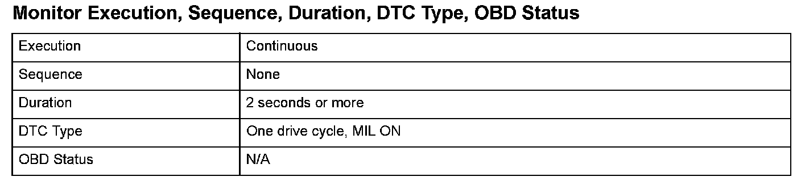

Advanced Diagnostics
DTC P0406: Exhaust Gas Recirculation (EGR) Valve Position Sensor Circuit High VoltageGeneral Description
The exhaust gas recirculation (EGR) system reduces oxides of nitrogen (NOx). NOx is generated by high combustion temperatures. The EGR system lowers peak combustion temperature by recirculating exhaust gas into the air/fuel mixture, thus reducing NOx emissions. To determine the optional amount of recirculating exhaust gas depending on driving conditions, a command value (the amount of valve lift) is stored in the powertrain control module (PCM). The EGR valve position sensor indicates the amount of valve lift, and the PCM controls the EGR valve so that the amount of actual valve lift equals the command value.
If the EGR valve position sensor output signal voltage is not within a specified value, a malfunction is detected and a DTC is stored.

Monitor Execution, Sequence, Duration, DTC Type, OBD Status
Enable Conditions
Malfunction Threshold
The EGR valve position sensor output voltage is 4.88 V or more for at least 2 seconds.
Diagnosis Details
Conditions for illuminating the MIL
When a malfunction is detected, the MIL comes on and the DTC and the freeze frame data are stored in the PCM memory.
Conditions for clearing the MIL
The MIL will be cleared if the malfunction does not recur during three consecutive trips in which the diagnostic runs.
The MIL, the DTC, and the freeze frame data can be cleared by using the scan tool Clear command or by disconnecting the battery.